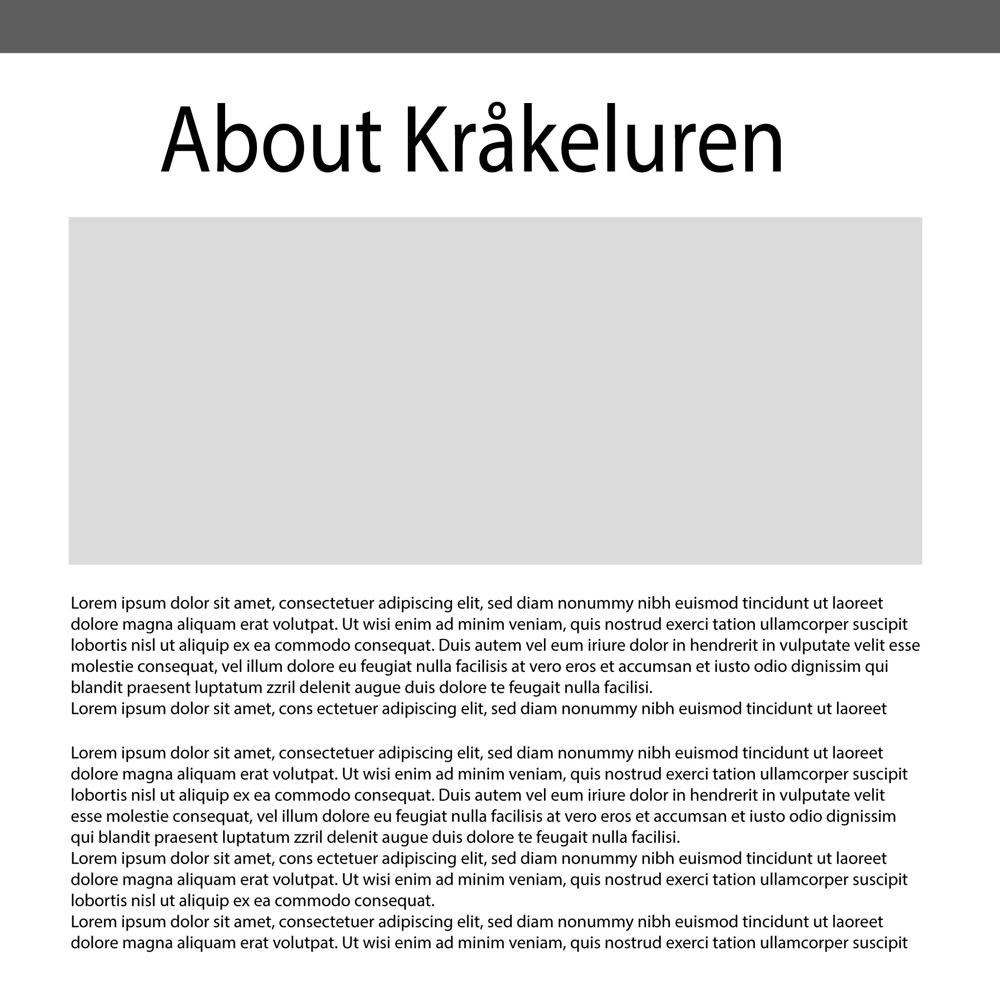
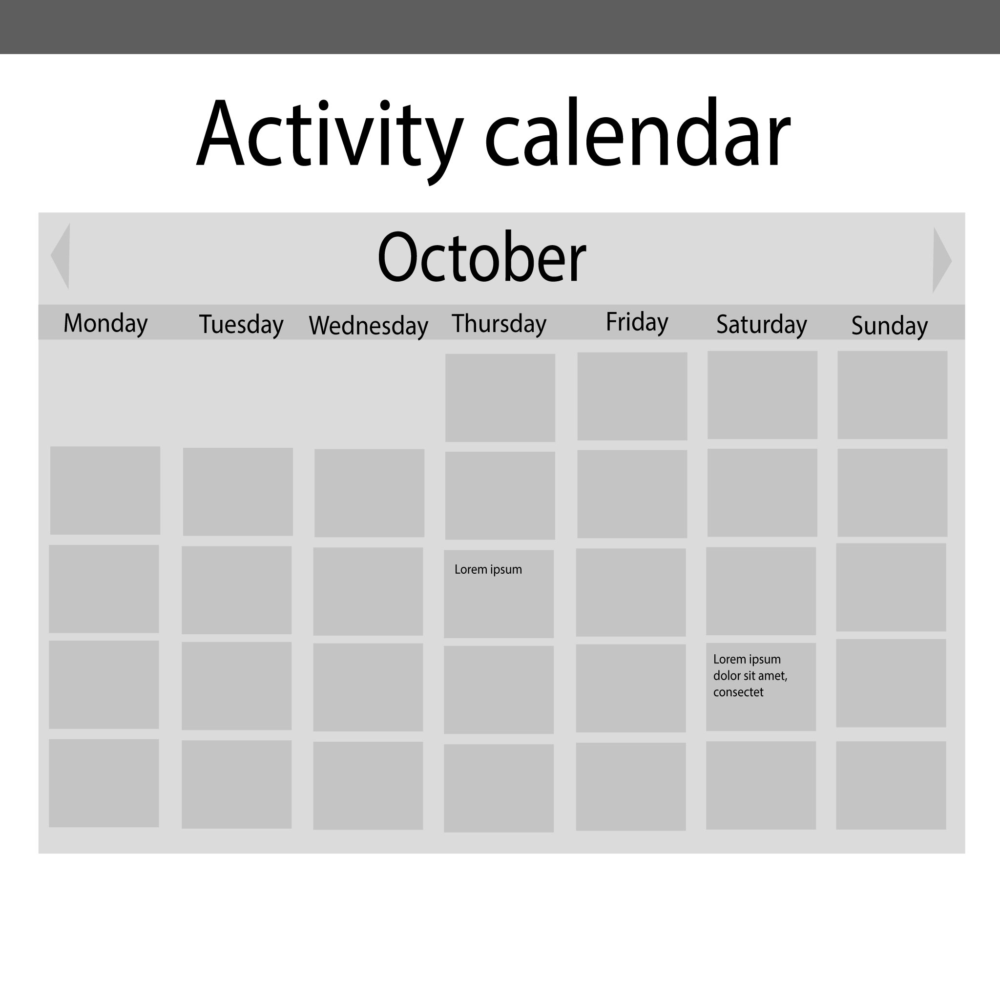

The purpose of the website is to display Kråkeluren as a great choice for
new students of Spanskrøret who wants to engage in some social group while
studying at NTNU. We wish to create a welcoming and fun website that presents
Kråkeluren as an exciting and welcoming group.
While the website will be approachable to anyone curious about them, the main
target audience are male members of the student organization Spanskrøret who's
considering joining the troupe.
// WIP: har bare kladdet, gjerne fyr løs med innspill her
We want the website to have a straightforward, easily readable appearance
(more on this in the next section). Navigation on the site should be visually
intuitive with a persistent nav-bar at the top from which the user can access
every single page, from any page, in addition to the logo and title placed
above the nav bar, which leads to the front-page when clicked on. The number
of pages is manageable enough that they can each inhabit this nav-bar without
cluttering it (though splicing a couple of the pages together is not out of
the question - more on that under "Content").
// Also WIP, ibidem
Firstly: Aesthetic. We want to use a somewhat minimalistic style, using
the colours of Kråkeluren's logo as much as possible to create visual consistency;
black, slightly dark grey and an off-white. This could be combined a number of
different ways (off-white text on black buttons, black text on off-white background,
dark-grey section outlines, etc.), allowing us to distribute some visual interest
as well.
Second: Layout. As mentioned above, we want a persistent navigation bar, with the
logo on the left (and perhaps social media quick-links, situated to the right)
just above. When the user is at the top of the screen, this part should draw
some attention, while after scrolling a couple inches (abstract amount for the time
being), the logo should shrink down and the nav-bar become thinner, to occupy less
space while maintaining navigation no matter where the user is on-screen.
// Insert horribly simple but readable front-page mockup.
This will be the main page of the site.
This page will have a few paragraphs about Kråkestyret and pictures of all the members, as well as a desciption of them and what they do in the group. We want this presentet on the page as round images with a name in bold writing and a description under each.
The blog page will have several posts in different sizes with images and text. They will be placed in two columns with the same distance between each post.
The gallery will have a slideshow of images with descriptions at the top, and all images will also be presentet in three columns below. These will also have a descriprion but will be smaller.

The Kråke-shop page will have the items displayed in boxes in two columns. Each will have a picture of the item, a description and the price.
